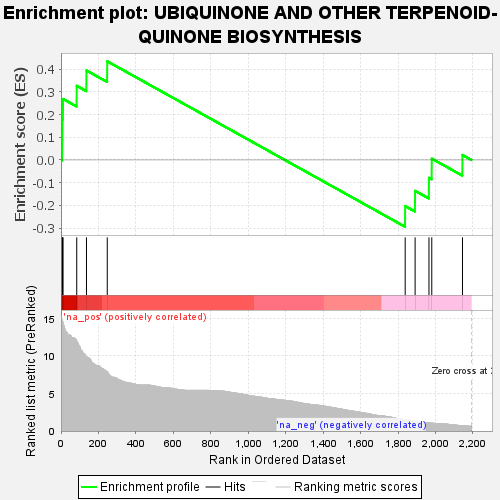
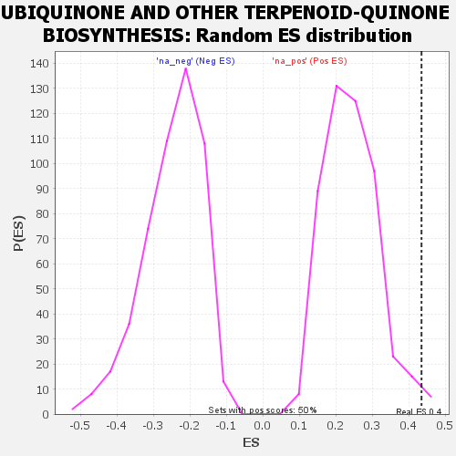

| | | Dataset | GSEA RNK clr Maaslin2 MucosalvsLuminal KO - ProximalColon.rnk |
| Phenotype | NoPhenotypeAvailable |
| Upregulated in class | na_pos |
| GeneSet | UBIQUINONE AND OTHER TERPENOID-QUINONE BIOSYNTHESIS |
| Enrichment Score (ES) | 0.43454713 |
| Normalized Enrichment Score (NES) | 1.7963842 |
| Nominal p-value | 0.014141414 |
| FDR q-value | 0.06418619 |
| FWER p-Value | 0.554 |
Table: GSEA Results Summary

Fig 1: Enrichment plot: UBIQUINONE AND OTHER TERPENOID-QUINONE BIOSYNTHESIS
Profile of the Running ES Score & Positions of GeneSet Members on the Rank Ordered List

Fig 2: UBIQUINONE AND OTHER TERPENOID-QUINONE BIOSYNTHESIS: Random ES distribution
Gene set null distribution of ES for UBIQUINONE AND OTHER TERPENOID-QUINONE BIOSYNTHESIS